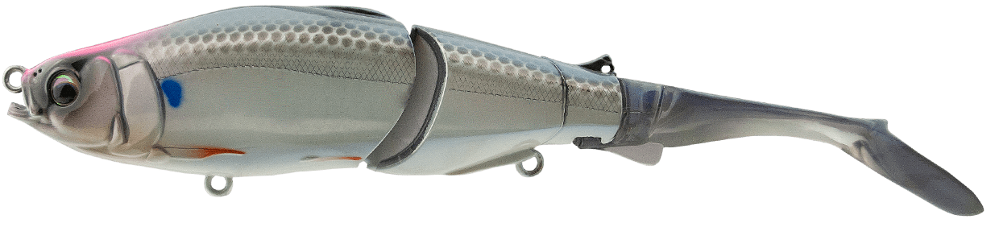
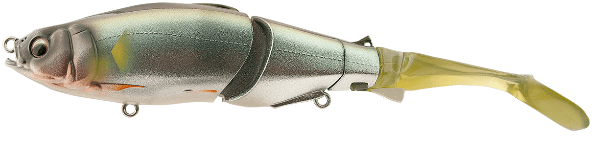
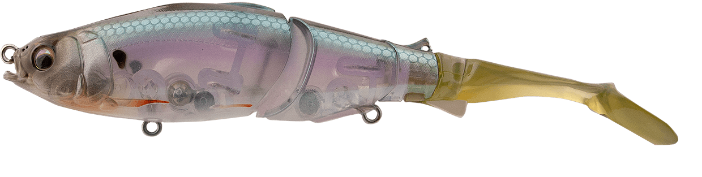
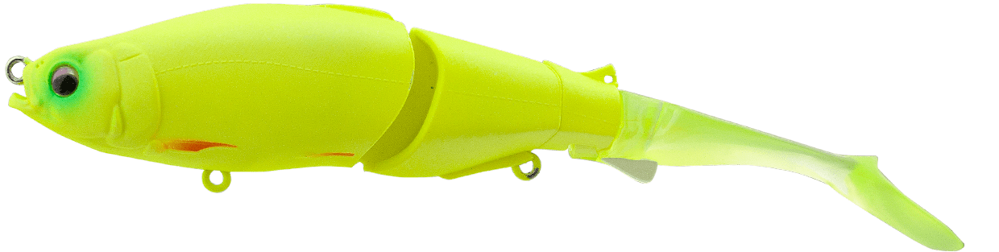

ブルージュ150F
（brouge 150F）
更新日：2026年11月3日
ブルージュ150F（brouge 150F）はhifumi creating（ヒフミクリエイティング）のビッグベイトです。
ブルージュのコンセプトとアクションを一回りコンパクトに作り直した150mmモデルで、スレの進んだエリアや小さめのベイトにも合わせやすいのが魅力です。水面近くから探れるフローティングモデルです。

画像出典:hifumi creating公式HP
スペック
- メーカー
- hifumi creating（ヒフミクリエイティング）
- タイプ
- ビッグベイト（フローティング）
- 全長
- 150mm（スイムテール）
- 自重
- 23g
- レンジ
- 0〜100cm
- フック
- BKK SPEAR-21 UA #6
- リング
- #3
- ターゲット
- シーバス
- 価格
- 5,830円（税込）
- 発売
- 2026年6月
▼今すぐチェック
ブルージュ150Fの特徴
ブルージュの演出力を受け継いだ、一回りコンパクトな150mmビッグベイト
-
3ジョイント＋エラストマーのソフトテール
3ジョイントのハードボディにエラストマー製のソフトテールを組み合わせ、オリジナルのジョイント構造でアクションの基点をコントロール。巻くだけでも独自のナチュラルスイミングで誘える。
-
状況で替えられるテール
テールアジャスタブルシステムを採用。スイミング重視のスイムテールと、スライドアクション重視のフィッシュテールを、状況や好みで付け替えられる。
-
ML〜Mクラスのタックルに対応
操作感や水絡みを受け継ぎながら、スレの進んだエリアや小さめのベイトにも合わせやすいサイズ。ML〜Mクラスのタックルでも使える。
ブルージュ150Fの使い方
まずはただ巻きで、ジョイントの動きとテールの水絡みを感じましょう。
巻いて止めて浮かせる間を入れ、ロッドワークで緩急をつけると、よりナチュラルにも、リアクションでも誘えます。巻きとロッドワークの反応を見ながら、その日の誘い方を探っていきます。
ブルージュ150Fの得意な状況
スレの進んだエリアや、ベイトが小さめでビッグベイトに反応しにくい場面が出番です。
シャローや水面近くの魚に見せたい時にも、フローティングが使いやすくなります。
大きすぎないシルエットで誘えるので、大きなルアーに口を使わない魚が釣れるきっかけになります。
ワンポイント
スイムテールとフィッシュテールで動きが変わるので、反応がない時はテールを替えて泳ぎを変えるのがおすすめです。ウエイトシールの調整でも、沈み方を変えられます。
ブルージュシリーズの使い分け
| モデル | 全長／自重 | 特徴 |
|---|---|---|
| 190F | 190mm／42g | レンジ0〜120cm。シリーズの基本形 |
| 190SS | 190mm／46g | レンジ30〜150cm。190のスローシンキング |
| 150F | 150mm／23g | レンジ0〜100cm。スレた場面や小さめのベイトに（本記事のモデル） |
| 150SS | 150mm／24.5g | レンジ10〜120cm。150のスローシンキング |
150は190より一回りコンパクトで、ボリューム感もかなり変わります。ベイトの大きさと使うタックルで選びましょう。ほかに210や、ブルージュフレックスもあります。
人気カラー
ブルージュ150は190と共通の全6色展開。人気カラーを紹介します。

レンズボラボラを意識した場面で使いやすいカラー。

ラメメタルアユアユをイメージしたラメ入りのメタルカラー。

ゴーストベイト透け感のあるカラー。澄み潮でナチュラルに見せたい時に。

マットチャート濁りでも見えやすい定番のチャートカラー。
画像出典:hifumi creating公式HP
ブルージュ150Fに似ているルアー
-
 ブルージュ150SS
ヒフミクリエイティング
詳細はこちら＞
ブルージュ150SS
ヒフミクリエイティング
詳細はこちら＞
同じ150mmのスローシンキングモデルで自重は24.5g。レンジ10〜120cmで、少し沈めて誘いたい時に。
-
 ダヴィンチ150
エレメンツ
詳細はこちら＞
ダヴィンチ150
エレメンツ
詳細はこちら＞
全長150mm・自重約32gのジョイントスイムベイト。同じ150mmクラスで、ソルト向けの150SWも展開されている。
-
 コノ野郎180
ブルーブルー
詳細はこちら＞
コノ野郎180
ブルーブルー
詳細はこちら＞
全長180mm・自重68gの3分割ジョイントのスイムベイト。もっと大きなベイトやパワーのある展開を狙いたい時に。